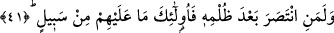

barışı sağlarsa onun mükâfâtı Allah’a âiddir” âyeti nazil oldu.[125]
Bir hadis-i şerifte şöyle buyrulmaktadır: “Kıyâmet günü bir münâdî şöyle
seslenecektir. Nerede insanların kusurlarını affedenler? Rabbinize geliniz ve
ecirlerinizi alınız. Allah’ın, affeden her müslümanı cennete koyması bir haktır.”[126]
Şâir der ki:
Günâhı/kötülüğü bağışlamak fütüvvet ehlinin yoludur,
Af ve hilim olmadan fütüvvet işi tamam olmaz.
Yine Peygamberimiz (s.a.) şöyle buyuruyor: “Allah Teâlâ kıyâmet günü bütün
yaratıkları mahşer meydanına topladığı zaman bir münâdî şöyle seslenir: «Fazîlet
ehli nerededir?» Az bir insan topluluğu kalkıp süratle cennete doğru yol alırlar.
Melekler bunları karşılayıp: “Süratle cennete doğru gidiyorsunuz, siz kimsiniz?»
diye sorarlar. Bunlar: «Biz fazîlet ehli insanlarız» derler. Bu sefer melekler: “Sizin
diğer insanlardan farkınız ve üstünlüğünüz nedir?» diye sorarlar. Bu insanlar: «Biz
bir zulüm ve haksızlığa maruz kaldığımızda sabrederdik. Bize bir kötülük
yapıldığında affederdik. Bize kaba ve câhilce davranıldığında biz hoşgörü ile
mukabele ederdik» derler. Melekler: «Buyurun, girin cennete! Çalışanların ücreti ne
güzeldir» derler.”[127]
et-Tevilatü’n-Necmiyye’de açıklandığına göre Allah Teâlâ burada şuna işâret
etmektedir: Nefisleri tarafından kendilerine bir zulüm isâbet eden gönül ehli Allah
dostları, muhalefet meydanında koşmalarını engellemek için yularlarını çekmek
sûretiyle zâlim nefislerinden intikam alırlar. Nefiste meydana gelen hırs, şehvet, gazap,
cimrilik, korkaklık, hased, kibir, aşırma ve hıyanet gibi kötülüklerin cezâsı, bu nefsânî
hastalıklara ilaç olacak yani bu sıfatlara zıt bir takım güzel sıfatların kalpte meydana
gelmesidir. Çünkü bu sıfatların ilacı ancak zıtlarıyla mümkündür. Tabiî ki bu tedaviyi
yaparken nefsin riyâzet ve cihâdında sınırı aşmamalıdır. Zîrâ nefsinin de senin üzerinde
bir hakkı vardır. Artık kim kötülerine zıt olan güzel sıfatlarla nefsi ıslah eder, nefsin
riyâzet ve cihâdında aşırıya gitmez ve affederse onun ecri Allah’a âiddir. Artık bu kul
Allah’ın sıfatlarıyla sıfatlanır. Affetmek de Allah’ın sıfatlarındandır. Allah affedicidir
ve affı sever. Kul da bu sâyede affedici olup Allah’ın sevgisine mazhar olur. Muhakkak
ki Allah, nefisle beraber ağır riyâzet yapmayı af yerine koyan zâlimleri sevmez.
41. Kim zulme uğradıktan sonra hakkını alırsa, artık onlara yapılacak bir şey
yoktur.
“Kim zulme uğradıktan sonra” zâlimin kendisine zulmetmesinden sonra kısas yapar